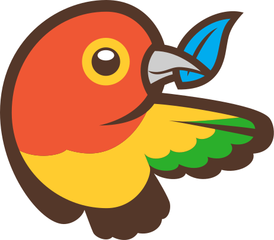
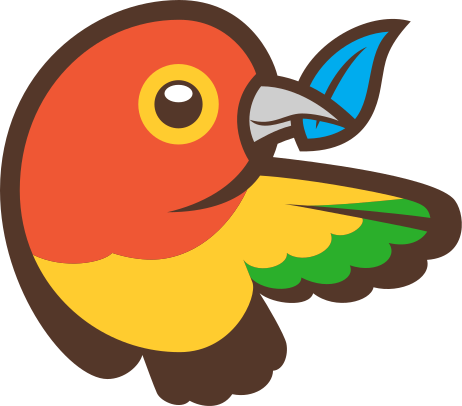


 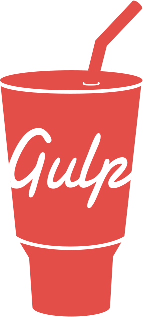
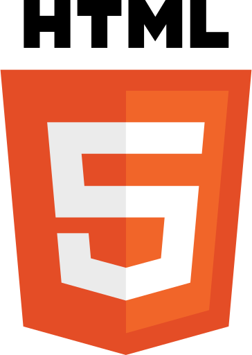
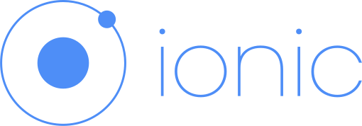
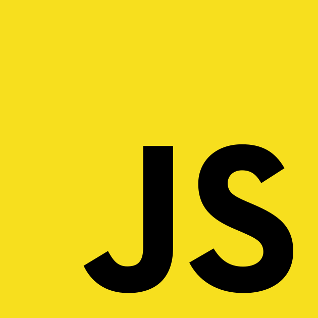
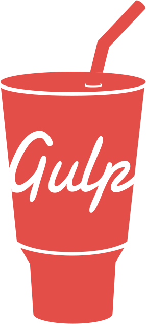
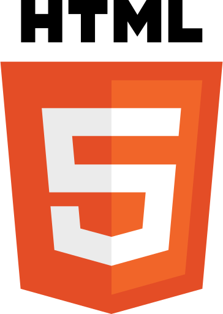
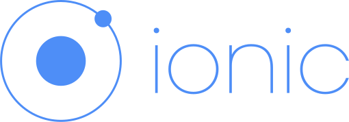
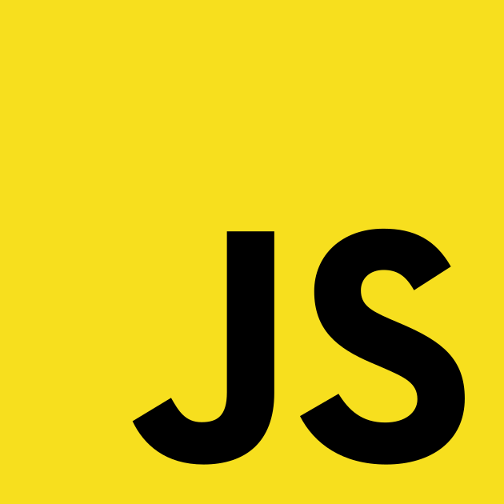

 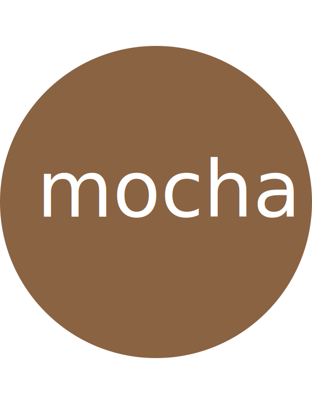
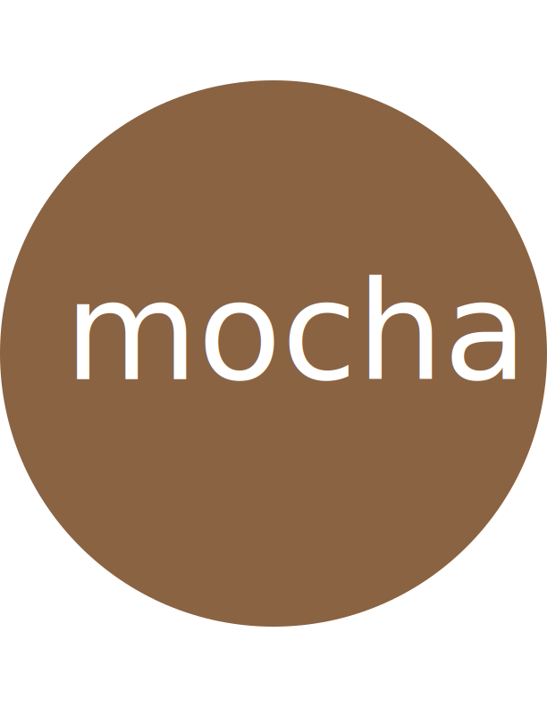
 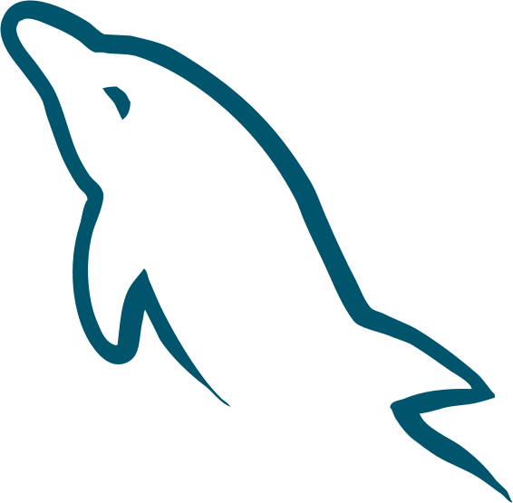
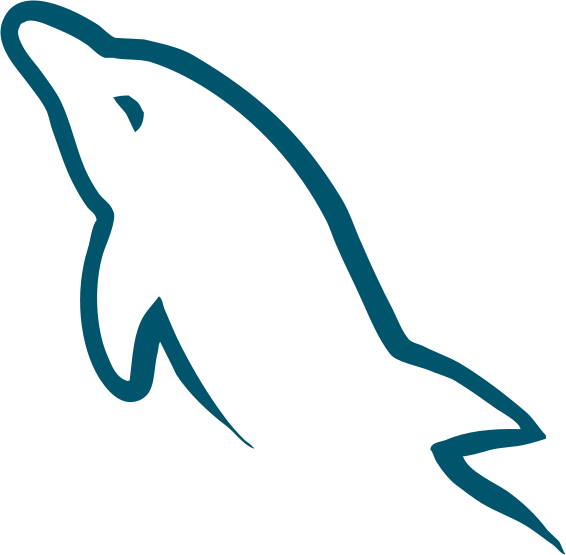
 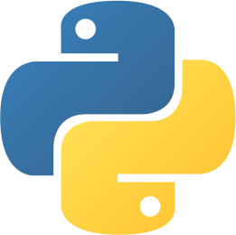
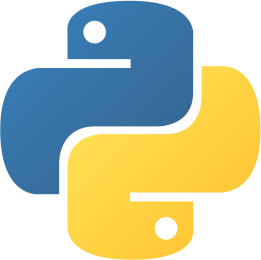
 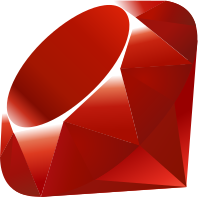
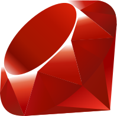


HTML/CSS
HTML5, CSS3, Sass, Less, Emmet, SVG, Responsive Web Design, Bootstrap, Micro-frameworks, SEO
Javascript
Node.js, jQuery, React, Backbone/Marionette, Meteor, D3, Handlebars, Jasmine/Mocha. ES 5/6/7
Back-end
PHP (Wordpress/Laravel), Objective-C, Ruby, Python, MySQL, MongoDB, Redis, Rest-API, Bash
Dev Tools
Gulp, Grunt, Git, Browserify, Bower, NPM, Yeoman, Cordova, Ionic
UI/UX
Adobe PS/AI, Sketch, Axure, Invision, OmniGraffle, Optimizely
Experiência Profissional
– Desde 2003
Programador freelancer (em 2008 montei o estúdio Kollectiv)
Desenvolvi um CMS completo em PHP que ainda uso em alguns projetos mais complexos.
Programador freelancer (em 2008 montei o estúdio Kollectiv)
Desenvolvi um CMS completo em PHP que ainda uso em alguns projetos mais complexos.
– Entre 1997 e 2012
Sócio-Programador-Editor do site rraurl.com, o primeiro site brasileiro sobre música e comportamento alternativo e com uma comunidade participativa.
Experiência: PHP, HTML, Javascript, CSS, MySQL, SEO, SVN. Comunidade, usabilidade.
Sócio-Programador-Editor do site rraurl.com, o primeiro site brasileiro sobre música e comportamento alternativo e com uma comunidade participativa.
Experiência: PHP, HTML, Javascript, CSS, MySQL, SEO, SVN. Comunidade, usabilidade.
– Entre 1994 e 2010
Administração de sistemas e consultoria em produtoras de áudio e vídeo: Trattoria Filmes, Vetor Zero/Lobo Filmes, Dr. DD Música, O2 Filmes, Conspiração Filmes entre outras.
Experiência: Windows, Mac, Linux, Unix. Avid, Pro Tools, Flame, Inferno, Logic, Premiere, Final Cut Pro, After Effects. Desenvolvimento de plug-ins e bibliotecas de sistema.
Administração de sistemas e consultoria em produtoras de áudio e vídeo: Trattoria Filmes, Vetor Zero/Lobo Filmes, Dr. DD Música, O2 Filmes, Conspiração Filmes entre outras.
Experiência: Windows, Mac, Linux, Unix. Avid, Pro Tools, Flame, Inferno, Logic, Premiere, Final Cut Pro, After Effects. Desenvolvimento de plug-ins e bibliotecas de sistema.
Qualificações Técnicas
Vinte anos de experiência em informática (Windows, Mac OS, Unix, Linux, BSD) e desenvolvimento (C, C++, Perl, Python, PHP, Applescript, Javascript, Objective C)Idiomas
Inglês Fluente (Leitura, Escrita e Conversação)Projetos
GithubFavstagram
Above The Skyline
LittleAlchemy Helper